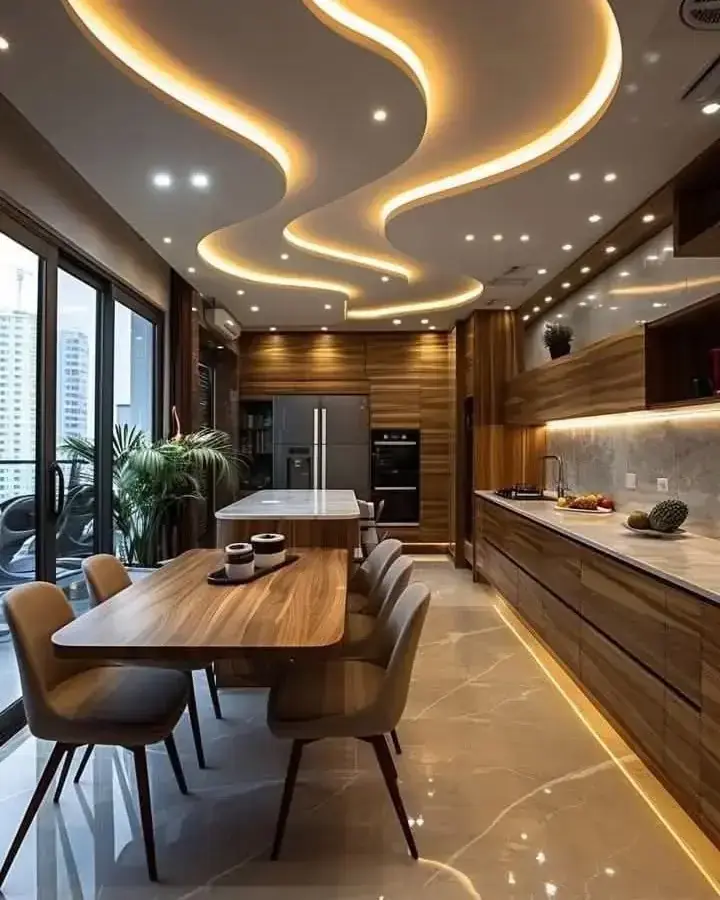
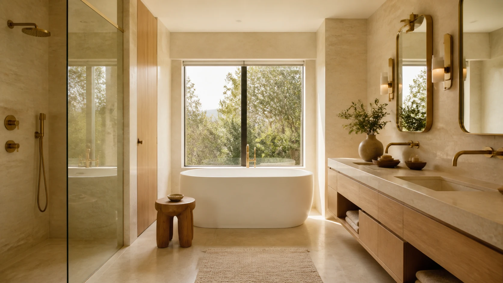
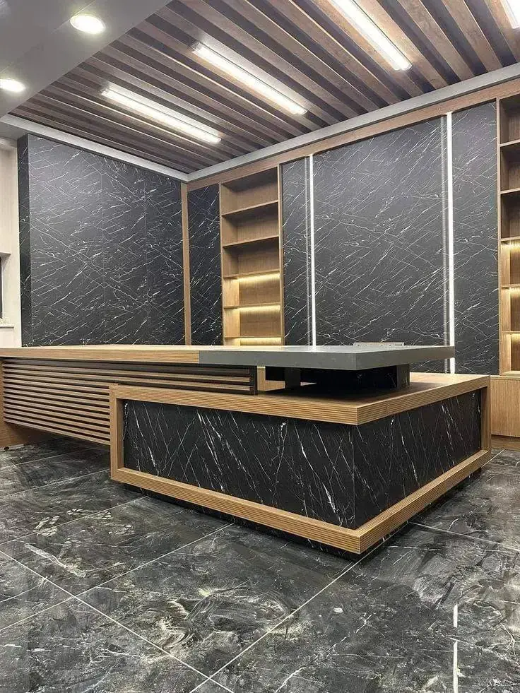
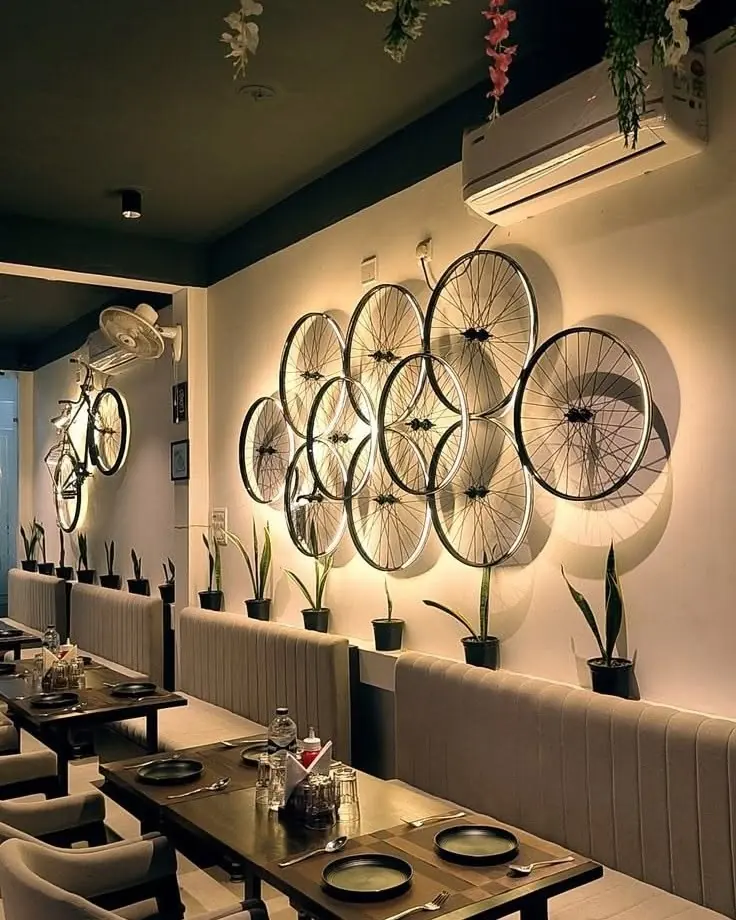

Completed projectCompleted project 01

Service 06 · Nairobi and across Kenya
Bring your space together with flooring, furniture, ceilings and the final details.
Made for your space
Our interior finishing service brings the last parts of your room together. We work on flooring, ceilings, lighting and custom furniture for homes and businesses. Our team makes chairs, sofas and other furniture to fit your space.
Our work
See completed joinery, reception finishes, furniture, ceilings and lighting details.

Completed projectCompleted project 01

Completed projectCompleted project 02

Completed projectCompleted project 03
Our approach
Share your space, style, budget and when you want to start.
Review the layout and 3D pictures before work begins.
Choose your furniture, colours, flooring and lights.
Our team carries out the fitting and finishing work.
Let’s get started
Share your location, your ideas and the help you need. Call or WhatsApp 0726 138 627.
Plan your project ↗